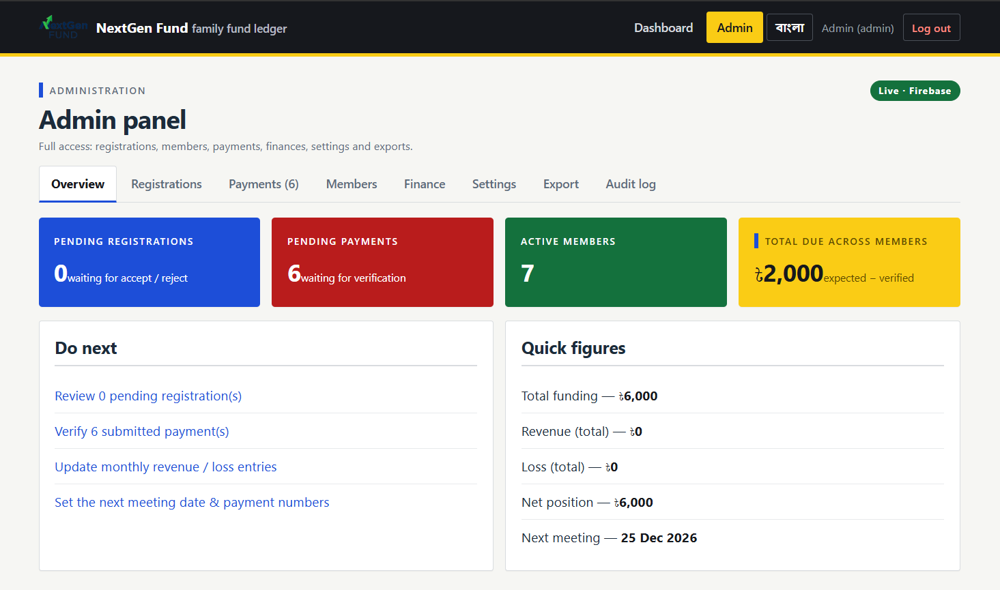

NextGen Fund · বাগ রিপোর্ট
পেমেন্ট verify করার পরেও ড্যাশবোর্ডে "Pending payments 6" ও "Verify 6 submitted payment(s)" লেখা থেকে যেত। মূল কারণ ছিল সংখ্যা গোনার একটি লুকানো ভুল — কোনো টাকা আটকে ছিল না।
"Verify 6 submitted payment(s)" · ট্যাব ব্যাজ "Payments (6)"
ফান্ড স্ন্যাপশট: pendingDue ৳০ · verified ৳৬,০০০

ওভারভিউ কার্ড ও ট্যাব ব্যাজ ডাকত S.listPayments('pending') — একটি স্ট্রিং। কিন্তু ফাংশনটি ফিল্টার পড়ত filter.status থেকে, যা স্ট্রিং-এ undefined। ফলে শর্তটি মিথ্যা হয়ে ফিল্টার পুরোপুরি বাদ পড়ত:
// পুরোনো কোড — admin.js:13, 506 + store.js:520 / firebase-adapter.js:509
var pays = await S.listPayments('pending'); // স্ট্রিং পাঠানো হয়
listPayments: async function (filter) {
var list = ...payments.slice();
if (filter && filter.status) // 'pending'.status === undefined → false
list = list.filter(function (p) { return p.status === filter.status; });
return list; // ⇒ ALL পেমেন্ট ফেরত
}তাই সব পেমেন্ট (verified + rejected সহ) গোনা হত। verify করলে একটি পেমেন্ট pending থেকে verified হয়, কিন্তু "সব পেমেন্ট"-এর সংখ্যা বদলায় না — ফলে ৬ থেকেই ৬ থেকে যেত। আর ৳৬,০০০ ছিল ৬টি verified পেমেন্টের যোগফল (Total funding), pending কোনো টাকা নয়।
লুকিয়ে রাখা কারণ: listRegistrations('pending') ঠিক এই স্ট্রিং শৈলীতেই কাজ করে — একজন ডেভেলপার একই নিয়ম ধরে নিয়ে payments-এও স্ট্রিং পাঠান, কিন্তু সেখানে API অবজেক্ট চাইত। ভুল কনভেনশন = নিঃশব্দ ব্যর্থতা (কোনো এরর নেই)।
| সারফেস | ফাইল:লাইন | মন্তব্য |
|---|---|---|
| Overview → PENDING PAYMENTS কার্ড | admin.js:20 | সব পেমেন্ট গুনত |
| Overview → "Verify {n} submitted payment(s)" | admin.js:27 | সব পেমেন্ট গুনত |
| ট্যাব ব্যাজ "Payments (n)" | admin.js:506 | সব পেমেন্ট গুনত |
| Payments ট্যাব কাউন্ট/ফিল্টার | admin.js:117-127 | ঠিক ছিল (অবজেক্ট পাঠাত) — অপরিবর্তিত |
| মেম্বার পোর্টাল pending লাইন ও ফুটার | portal.js:24-26, 67 | ঠিক ছিল → এখন শেয়ার্ড কোডে |
| অ্যাডমিন ম্যানুয়াল এন্ট্রি (নতুন আবিষ্কার) | addManualPayment | একই ref দুইবার এন্ট্রি করা যেত → ফান্ডে টাকা দুইবার |
| পরিবর্তন | ফাইল | কী করল |
|---|---|---|
| শেয়ার্ড হিসাব | util.js | normPayFilter() (স্ট্রিং/অবজেক্ট দুটোই, ভুল হলে এরর) + summarisePayments() — counts, amounts, duplicates |
| স্টোর API | store.js, firebase-adapter.js | paymentStats() — দুই ব্যাকএন্ডে হুবহু একই ফলাফল |
| KPI + ডু নেক্সট + ব্যাজ | admin.js | সংখ্যা ও টাকা একসাথে; কিছু pending না থাকলে "যাচাইয়ের অপেক্ষায় কোনো পেমেন্ট নেই" |
| Payments সারসংক্ষেপ কার্ড | admin.js | Pending 1 (৳৬,০০০) · Verified 107 (৳১,৬৮,০০০) · Rejected … · All … |
| যাচাই কার্ড | admin.js | ড্যাশবোর্ডের সংখ্যা বনাম কাঁচা রেকর্ডের স্ক্যান — মিললে সবুজ, নাহলে লাল। এই কার্ডটিই বাগটি ধরত |
| ডুপ্লিকেট ref বন্ধ | দুই ব্যাকএন্ড | একই সদস্য+মাধ্যম+ref থাকলে dup-ref এরর → ফান্ডে টাকা দুইবার যোগ হবে না |
| পোর্টাল ফুটার | portal.js | একই শেয়ার্ড হিসাব ব্যবহার |
| ভাষা | i18n.js | ১৪টি নতুন key, EN + BN সমতা ৪৭৭/৪৭৭ |
| স্যুট | ফলাফল | আউটপুট |
|---|---|---|
| tests/pending.test.mjs (নতুন) | ALL PASS (36) | docs/evidence/pending-local-tests-output.txt |
| tests/store.test.mjs | 60 passed / 0 failed | |
| tests/access.test.mjs | ALL PASS | |
| tests/member-cannot-modify.mjs | ALL PASS | |
| tests/fixes.test.mjs | ALL PASS | |
| tests/advance.test.mjs | ALL PASS (32) | |
| tests/e2e-emulator/pending-status-e2e.mjs (নতুন) | ALL PASS (26) | docs/evidence/pending-e2e-output.txt |
| tests/e2e-emulator/fixes-live-e2e.mjs | ALL PASS (35) |
OLD (পুরোনো): listPayments('pending') → 107 rows ← সব পেমেন্ট
নতুন : listPayments('pending') → 0 rows ← আসল pending = ০
নতুন : paymentStats() → pending 0 / ৳0 · verified 107 / ৳168,000আসল অ্যাডাপ্টার + আসল firestore.rules (emulator) E2E-এও একই: verify করার আগে pending ২/৭,০০০ → একটি verify করলে ১/৬,০০০ → সব verify করলে ০/০, আর পুরোনো কলে তখনও "২" দেখাত।
| যাচাই | ফলাফল |
|---|---|
| ফান্ড স্ন্যাপশট (বর্তমান) | totalFunding ৳৬,০০০ · memberDeposits ৳৬,০০০ · memberAdvance ৳৪,০০০ · pendingDue ৳০ · memberCount ৫ |
| সদস্য kaziauto0914114510 | paid ৳২,০০০ · due ৳০ · advance ৳১,০০০ · pending ০ · লেজারে দুটি verified রো |
| সিদ্ধান্ত | লাইভে কোনো পেমেন্ট pending-এ আটকে নেই → কোনো ডেটা সংশোধন লাগেনি; "৬" ছিল গোনার ভুল |
আমাকে অ্যাডমিন লগইন দেওয়া হয়নি, তাই পুরো payments কালেকশন সরাসরি স্ক্যান করা যায়নি; তবে অ্যাডমিন-রাইটেড ফান্ড অ্যাগ্রিগেটই (যা অ্যাডমিন ড্যাশবোর্ড হিসাব করে) pendingDue ৳০ দেখাচ্ছে — এটি নির্ধারক প্রমাণ।
নতুন টুল tools/audit-pending-payments.mjs অ্যাডমিনের Payments CSV পড়ে (ডেটাবেসে হাত না দিয়ে) রিপোর্ট করে: আটকে থাকা pending, ডুপ্লিকেট ref (কত টাকা ঝুঁকিতে), অডিট-স্ট্যাম্প ছাড়া verified রো, এবং ১,০০০-এর গুণিতক নয় এমন অ্যামাউন্ট।
node tools/audit-pending-payments.mjs nextgen-payments-2026-09-14.csv --days 7
PENDING audit.case ৳1,000 ref AUDIT-1000 25 days old
audit.case|bkash|audit-6000 x2 ৳12,000 [verified, PENDING]
AUDIT VERDICT: 2 finding(s) ← exit code 1 (মনিটরিংয়ে ব্যবহারযোগ্য)
পরিষ্কার লেজারে: AUDIT VERDICT: CLEAN — exit code 0সম্পূর্ণ আউটপুট: docs/evidence/pending-audit-output.txt
git revert 3d11384 && git push — অথবা Firebase Hosting → Release history → Rollback। কোনো ডেটা মাইগ্রেশন নেই, তাই ডেটা অপরিবর্তিত থাকে।settings/public) শুধু অ্যাডমিন লিখতে পারে — তাই সদস্যের সাবমিশনের সঙ্গে সঙ্গে ফান্ড-লেভেল pendingDue হালনাগাদ হয় না, পরবর্তী অ্যাডমিন অ্যাকশনে হয়। পাবলিক পেজ কোনো pending অঙ্ক দেখায় না; সদস্যের পোর্টাল সরাসরি নিজের লেজার পড়ে।U.summarisePayments() / Store.paymentStats()।বিস্তারিত: docs/pending-status-fix-rca.md · অগ্রিম-নিয়ম: docs/advance-rule-spec.md